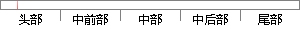

传感器和执行器中心（Berkeley Sensor and Actuator Center）的
片段位置图

相似结果
相似片段：
善红研究员、赵湛研究员、王军波副研究员等教师和多位研究生参加了本次报告。 林立伟教授现任教于美国加州大学伯克利分校机械工程系，是伯克利传感器和执行器中心（Berkeley Sensor and Actuator Center ,BSAC）的主任，从事微纳米机电系统的相关研究。林立伟教授是美国机械工程学会Fellow、ASME(American Society of Mechanical Engineers)MEMS Division发起人之一、ASME MEMS社团
| 对比库： | WriteCheck云资源库 |
| 来源： | www.ie.ac.cn 查看来源 |
| 发布时间： | 2013-05-26 |
| 相似率 | 28.21% （轻度抄袭） |